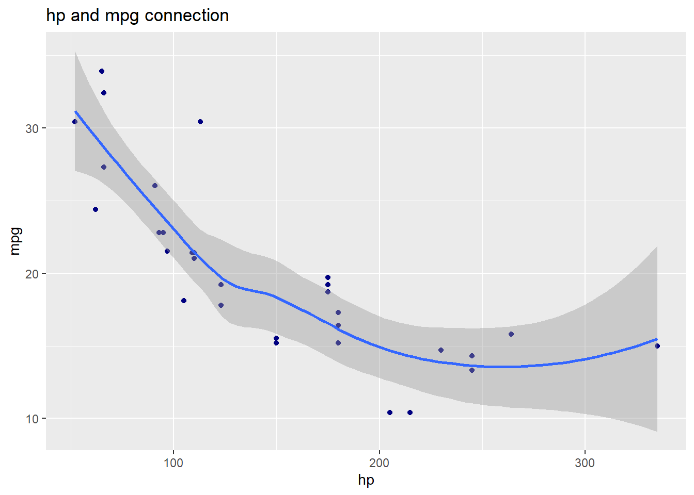
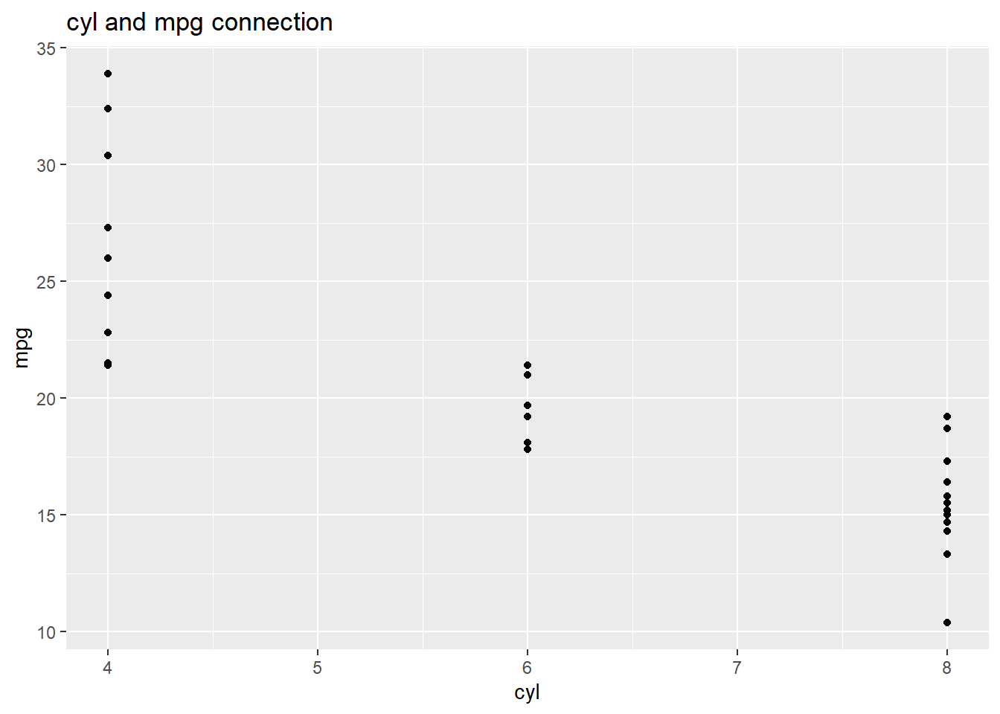
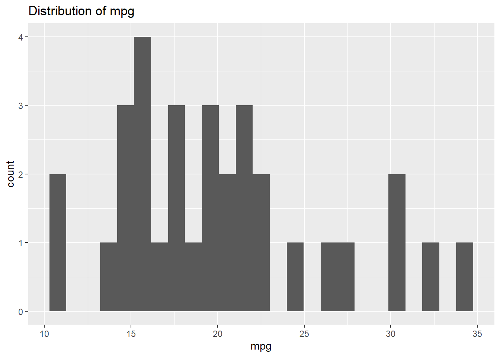
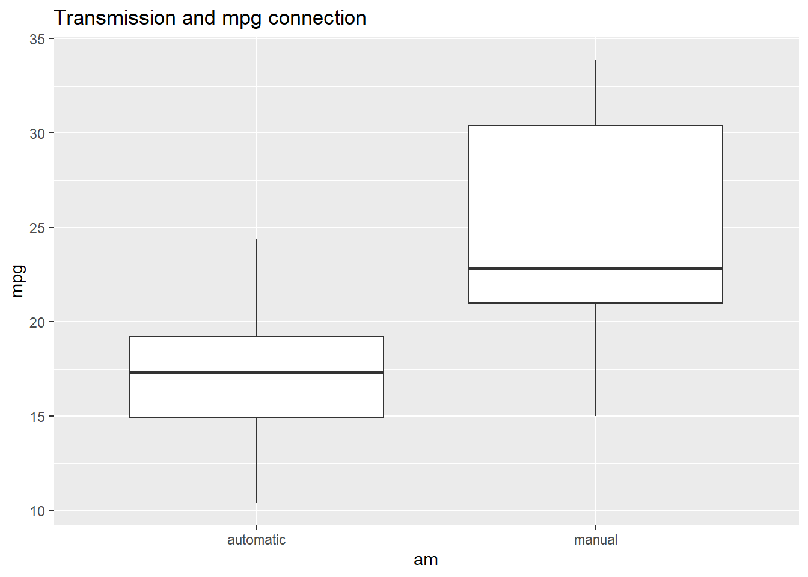
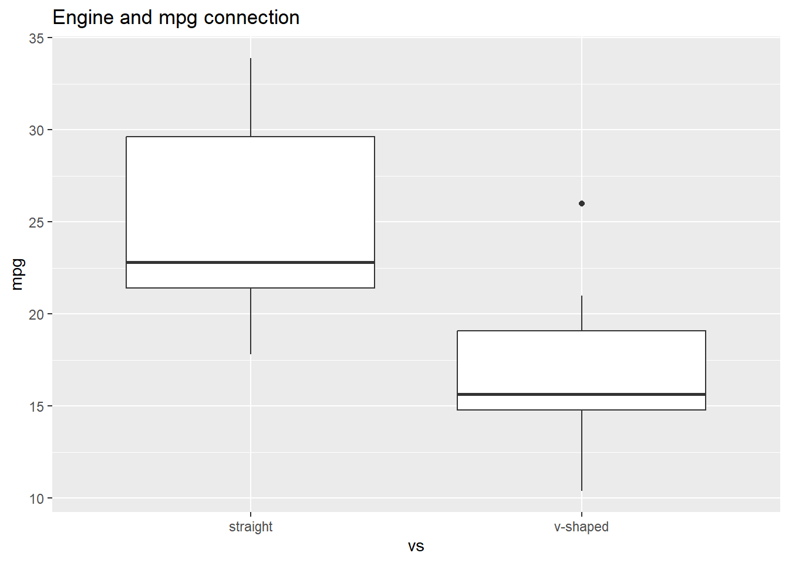
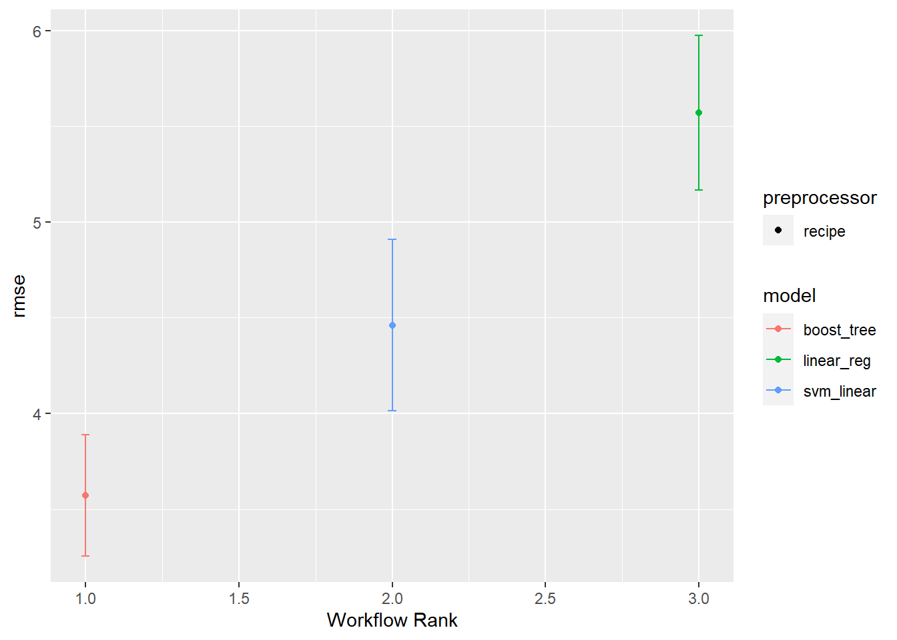
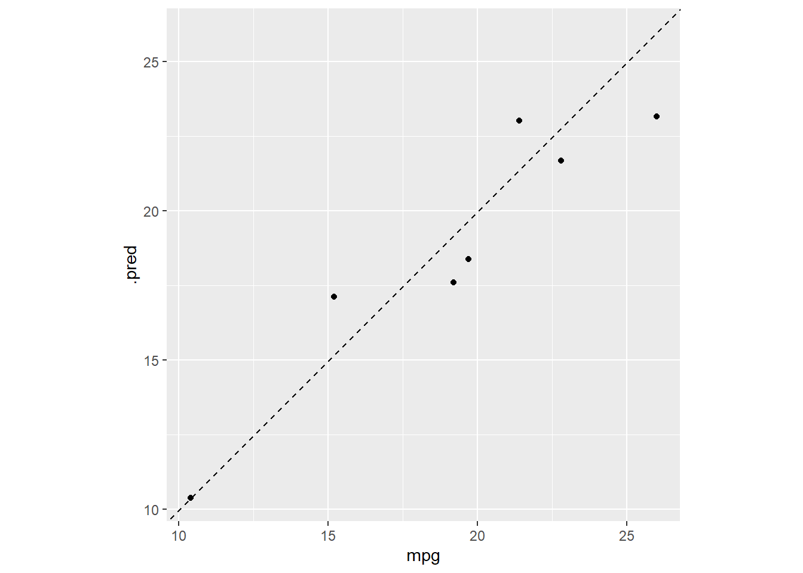

library(tidyverse)
library(tidymodels)
library(skimr)Introduction
Motor Trend Car Road Tests (mtcars) contains the data from Motor Trend US magazine about fuel consumption and other aspects of automobile design and performance for 32 automobiles (1973-74 models).
This time, our goal is to predict the Miles per gallon (mpg) of 32 automobiles. We will utilize tidymodels’ workflow_set function to build several regression models at once: linear model, support vector machine, and xgboost.
Import Library
Load the data
car_df <- mtcars
glimpse(car_df)Rows: 32
Columns: 11
$ mpg <dbl> 21.0, 21.0, 22.8, 21.4, 18.7, 18.1, 14.3, 24.4, 22.8, 19.2, 17.8,…
$ cyl <dbl> 6, 6, 4, 6, 8, 6, 8, 4, 4, 6, 6, 8, 8, 8, 8, 8, 8, 4, 4, 4, 4, 8,…
$ disp <dbl> 160.0, 160.0, 108.0, 258.0, 360.0, 225.0, 360.0, 146.7, 140.8, 16…
$ hp <dbl> 110, 110, 93, 110, 175, 105, 245, 62, 95, 123, 123, 180, 180, 180…
$ drat <dbl> 3.90, 3.90, 3.85, 3.08, 3.15, 2.76, 3.21, 3.69, 3.92, 3.92, 3.92,…
$ wt <dbl> 2.620, 2.875, 2.320, 3.215, 3.440, 3.460, 3.570, 3.190, 3.150, 3.…
$ qsec <dbl> 16.46, 17.02, 18.61, 19.44, 17.02, 20.22, 15.84, 20.00, 22.90, 18…
$ vs <dbl> 0, 0, 1, 1, 0, 1, 0, 1, 1, 1, 1, 0, 0, 0, 0, 0, 0, 1, 1, 1, 1, 0,…
$ am <dbl> 1, 1, 1, 0, 0, 0, 0, 0, 0, 0, 0, 0, 0, 0, 0, 0, 0, 1, 1, 1, 0, 0,…
$ gear <dbl> 4, 4, 4, 3, 3, 3, 3, 4, 4, 4, 4, 3, 3, 3, 3, 3, 3, 4, 4, 4, 3, 3,…
$ carb <dbl> 4, 4, 1, 1, 2, 1, 4, 2, 2, 4, 4, 3, 3, 3, 4, 4, 4, 1, 2, 1, 1, 2,…skim(car_df)| Name | car_df |
| Number of rows | 32 |
| Number of columns | 11 |
| _______________________ | |
| Column type frequency: | |
| numeric | 11 |
| ________________________ | |
| Group variables | None |
Variable type: numeric
| skim_variable | n_missing | complete_rate | mean | sd | p0 | p25 | p50 | p75 | p100 | hist |
|---|---|---|---|---|---|---|---|---|---|---|
| mpg | 0 | 1 | 20.09 | 6.03 | 10.40 | 15.43 | 19.20 | 22.80 | 33.90 | ▃▇▅▁▂ |
| cyl | 0 | 1 | 6.19 | 1.79 | 4.00 | 4.00 | 6.00 | 8.00 | 8.00 | ▆▁▃▁▇ |
| disp | 0 | 1 | 230.72 | 123.94 | 71.10 | 120.83 | 196.30 | 326.00 | 472.00 | ▇▃▃▃▂ |
| hp | 0 | 1 | 146.69 | 68.56 | 52.00 | 96.50 | 123.00 | 180.00 | 335.00 | ▇▇▆▃▁ |
| drat | 0 | 1 | 3.60 | 0.53 | 2.76 | 3.08 | 3.70 | 3.92 | 4.93 | ▇▃▇▅▁ |
| wt | 0 | 1 | 3.22 | 0.98 | 1.51 | 2.58 | 3.33 | 3.61 | 5.42 | ▃▃▇▁▂ |
| qsec | 0 | 1 | 17.85 | 1.79 | 14.50 | 16.89 | 17.71 | 18.90 | 22.90 | ▃▇▇▂▁ |
| vs | 0 | 1 | 0.44 | 0.50 | 0.00 | 0.00 | 0.00 | 1.00 | 1.00 | ▇▁▁▁▆ |
| am | 0 | 1 | 0.41 | 0.50 | 0.00 | 0.00 | 0.00 | 1.00 | 1.00 | ▇▁▁▁▆ |
| gear | 0 | 1 | 3.69 | 0.74 | 3.00 | 3.00 | 4.00 | 4.00 | 5.00 | ▇▁▆▁▂ |
| carb | 0 | 1 | 2.81 | 1.62 | 1.00 | 2.00 | 2.00 | 4.00 | 8.00 | ▇▂▅▁▁ |
It can be seen that the dataset consists of 32 automobiles with 11 variables. All data types are numeric and there are no missing values in the dataset.
Preprocessing
For preprocessing, we will change two variables, am (transmission) and vs (engine). We will transform the format to factor and also change the labels of the values.
car_df <- car_df |>
mutate( am = case_match(am, 1 ~ "manual", .default = 'automatic'),
vs = case_match(vs, 1 ~ 'straight', .default = 'v-shaped'),
am = as.factor(am),
vs = as.factor(vs))Explore the data





Build a Model
Before we build a model, we will divide the data into training set and test set with a ratio of 80:20. For feature engineering, we will normalize the data for numeric data and create dummy variables for nominal data.
set.seed(11)
car_split <- initial_split(car_df, prop = 0.8)
car_train <- training(car_split)
car_test <- testing(car_split)
set.seed(80)
car_fold <- bootstraps(car_train, times = 10)
car_recipe <- recipe(mpg ~ ., data = car_train) |>
step_normalize(all_numeric_predictors()) |>
step_dummy(all_nominal_predictors())
lm_spec <- linear_reg() |>
set_mode('regression') |>
set_engine('stan')
xgb_spec <- boost_tree() |>
set_mode('regression') |>
set_engine('xgboost')
svm_spec <- svm_linear() |>
set_mode('regression') |>
set_engine('kernlab')
wf_set <- workflow_set(preproc = list(basic = car_recipe),
models = list(lm = lm_spec,
xgboost = xgb_spec,
svm = svm_spec))
wf_set_fit <- workflow_map(wf_set,
resamples = car_fold,
seed = 123,
control = control_grid(save_pred = TRUE, save_workflow = TRUE ,parallel_over = "everything"))Evaluate the model
For the evaluation, we will use metric rmse to estimate our model performance. From the three models, we choose the best model according to metric rmse and fit the final model to the training set and evaluate the test set.
wf_set_fit |> collect_metrics(summarize = T) # A tibble: 6 × 9
wflow_id .config preproc model .metric .estimator mean n std_err
<chr> <chr> <chr> <chr> <chr> <chr> <dbl> <int> <dbl>
1 basic_lm Preprocess… recipe line… rmse standard 5.57 10 0.245
2 basic_lm Preprocess… recipe line… rsq standard 0.433 10 0.0540
3 basic_xgboost Preprocess… recipe boos… rmse standard 3.57 10 0.193
4 basic_xgboost Preprocess… recipe boos… rsq standard 0.728 10 0.0265
5 basic_svm Preprocess… recipe svm_… rmse standard 4.46 10 0.272
6 basic_svm Preprocess… recipe svm_… rsq standard 0.584 10 0.0486wf_set_fit |>
rank_results() |>
filter(.metric == 'rmse')# A tibble: 3 × 9
wflow_id .config .metric mean std_err n preprocessor model rank
<chr> <chr> <chr> <dbl> <dbl> <int> <chr> <chr> <int>
1 basic_xgboost Preprocess… rmse 3.57 0.193 10 recipe boos… 1
2 basic_svm Preprocess… rmse 4.46 0.272 10 recipe svm_… 2
3 basic_lm Preprocess… rmse 5.57 0.245 10 recipe line… 3autoplot(wf_set_fit, rank_metric = 'rmse', metric = 'rmse', select_best = TRUE)
best_result <- wf_set_fit |>
extract_workflow_set_result(id = 'basic_xgboost') |>
select_best(metric = 'rmse')
xgboost_result <- wf_set_fit |>
extract_workflow('basic_xgboost') |>
finalize_workflow(best_result) |>
last_fit(split = car_split)
collect_metrics(xgboost_result) # A tibble: 2 × 4
.metric .estimator .estimate .config
<chr> <chr> <dbl> <chr>
1 rmse standard 1.69 Preprocessor1_Model1
2 rsq standard 0.888 Preprocessor1_Model1predicted <- xgboost_result |>
collect_predictions()
predicted |>
select(.pred, mpg)# A tibble: 7 × 2
.pred mpg
<dbl> <dbl>
1 21.7 22.8
2 17.6 19.2
3 17.1 15.2
4 10.4 10.4
5 23.2 26
6 18.4 19.7
7 23.0 21.4predicted |>
ggplot(aes(x = mpg, y = .pred)) +
geom_point() +
geom_abline(lty = 2) +
coord_obs_pred()